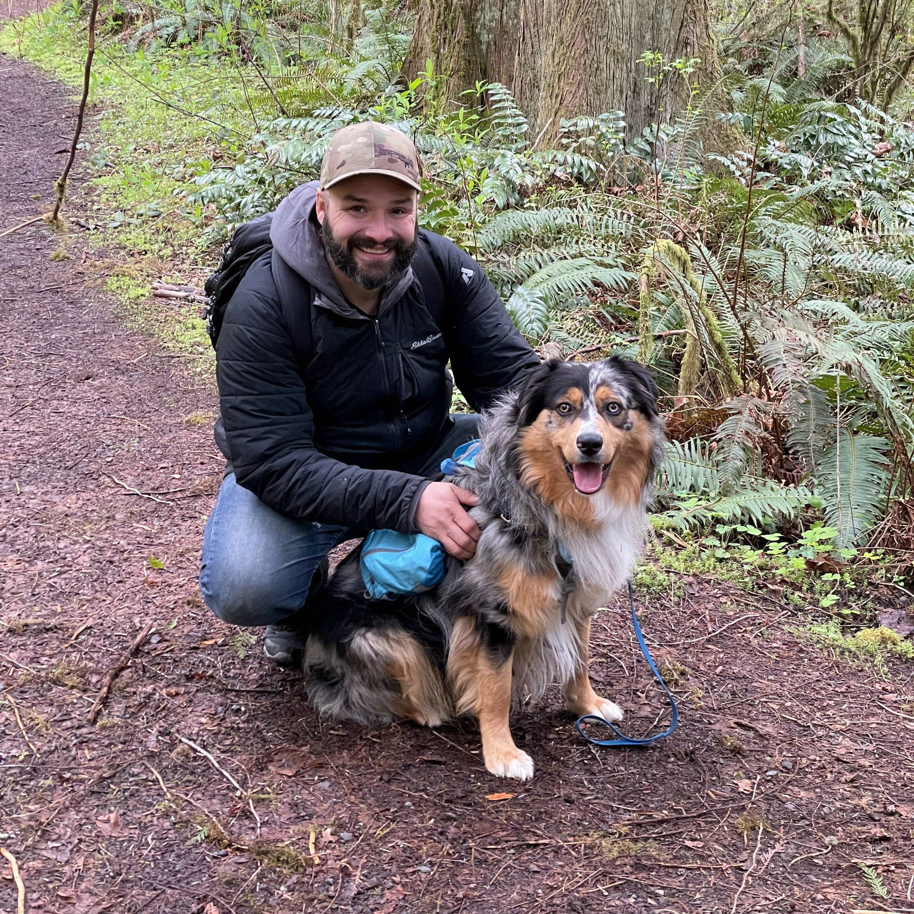

Builder · Writer · Artist · Storyteller
Joshua
Baird
I make things, tell stories, and build projects through art, cocktails, journalism, video, and a relentless curiosity about the world. This is my creative home.
Same curiosity.
Different adventures.
Different adventures.
Create.
Explore.
Build.
Repeat.
Explore.
Build.
Repeat.


People
Places
Ideas
Stories
Better days
Places
Ideas
Stories
Better days
A more
interesting
tomorrow.
interesting
tomorrow.
Where do you want to go?
Different paths. Same curiosity.
Good people.
Good dogs.
Good trails.
Better days. ●
Good dogs.
Good trails.
Better days. ●
A little more about me
Curious. Creative.
Always Building.
I’m Joshua, an artist, writer, bartender, storyteller, and lifelong explorer. I’m driven by curiosity, inspired by people and places, and always working on something new. Whether it’s a painting, a well-crafted cocktail, a story, or a bigger project, I believe a more interesting life is always possible.
Get to know the work →Same curiosity.
New horizons.
New horizons.
Color. Contrast. Conversation.
Art that leaves a mark.
Projects in Motion.
Ideas, passions, and work in progress.
◉→
⌁→
✎→
⚙→
Art
Paint. Explore. Express.
Bartending
Good drinks. Better people.
Journalism
Ask questions. Tell better stories.
Projects
Build what’s next.
Fresh from the workbenchThe newest videos update automatically.


A MORE
CURIOUS
TOMORROW
CURIOUS
TOMORROW
Let’s keep
exploring.
New places. Deeper conversations. A more interesting tomorrow.
Join the journey →